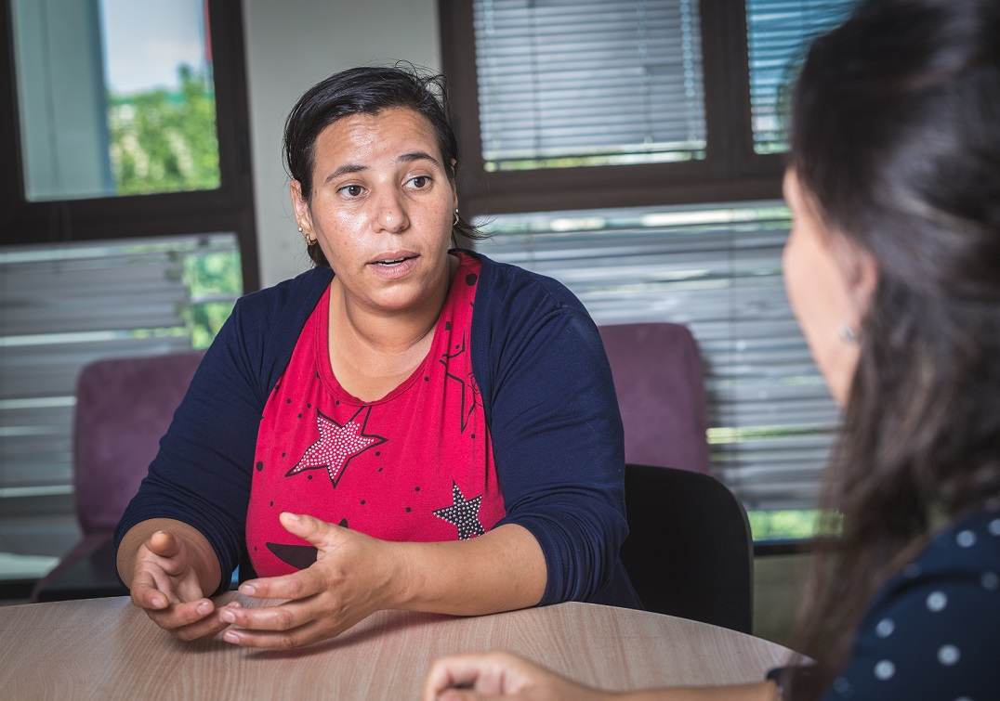

Renforcement de l'accès des femmes victimes de violences et/ou de discriminations aux services de base de la ville de Fès
Pourquoi mettre en œuvre ce projet?
- L’enquête Nationale sur la prévalence des violences à l’égard des femmes révèle que très peu de femmes victimes de violences dénoncent les violences qu’elles subissent. Ainsi seulement 10,5 % des victimes de violences ont déposé une plainte auprès de la police ou d’une autre autorité compétente, et seulement 1,3% ont demandé l’aide des associations de la société civile. L’accès des femmes victimes de violences aux services essentiels de justice, de santé, et d’accompagnement social se heurte à des obstacles spécifiques tel que l’isolement social, le faible accès à l’information, la dépendance économique à l’acteur des violences, l’ntersection avec d’autres facteurs de vulnérabilité tel que le niveau scolaire, la zone d’habitation, l’âge, le handicap etc…
- Certains acteurs ne sont pas toujours en mesure de réaliser un diagnostic approfondi avec les femmes victimes de violences accueillies. Ceci les empêche d’identifier l’ensemble des besoins en matière de soutien psychologique des victimes et/ou leurs enfants, d’autonomisation économique, de rapport aux administrations, de suivi médical, …
- Les femmes victimes de violences accueillies ne reçoivent pas systématiquement l’information sur les dispositifs d’accompagnement existant dans le territoire : juridique, psychologique, social, médical, autonomisation économique,…
- La diversité des situations, des vécus, des besoins et des obstacles auxquels sont exposées les femmes victimes de violences dans leur accès aux services de prise en charge, implique la nécessité d’une intervention complexe qui met la femme au centre, ainsi que l’action conjuguée de plusieurs acteurs. D’où la nécessité d’une vision commune et concertée, la convergence, la complémentarité, et l’efficacité de la coordination entre l’ensemble de ces acteurs.
- Certains profils de femmes victimes de violences ne trouvent pas toujours des réponses adaptées qui tiennent compte de leurs situations de handicap, de toxicomanie, de grand nombre d’enfants, ...
- Disparité dans les capacités des intervenantEs en matière d’écoute, de compréhension des violences de genre et des approches d’intervention en la matière…
- La coordination entre les associations œuvrant auprès des femmes victimes de violences, et entre ces dernières et les acteurs publics de prise en charge des VFF reste à renforcer.
En quoi consiste ce projet?
Le projet est articulé autour de deux axes:
- Chaine de services interne: consiste en la mise en œuvre au sein du « Centre Multifonctionnel Batha pour l’Autonomisation des Femmes » d’une chaine de services intégrée et systémique, composée de l’accueil, l’écoute, l’aide à l’élaboration de projets de vie, l’orientation juridique, l’appui psychologique, l’hébergement, le renforcement de l’employabilité, et l’accompagnement parentalité. Les interventions sont réalisées selon une approche globale, dont les objectifs d’autonomisation sont formulés par les usagères.
- Chaine de services externes: consiste en la conception au sein de la ville de Fès d’un ensemble de dispositifs accessibles aux survivantes de violences, qui impliquent les acteurs publics et associatifs, et permettent l’accompagnement des femmes victimes de violences dans la défense de leurs droits et le processus de leur autonomisation/empouvoirement à tous les niveaux juridique, social, économique et communautaire. Grâce au développement de procédures opérationnelles de coordination, et à la mise en œuvre d’une « chaine de référencement inter acteurs », les objectifs suivants seront réalisés:
- Parvenir à une plus grande fluidité dans le parcours des femmes victimes de violences, grâce à des interventions complémentaires, bien articulées, et couvrant l’ensemble du territoire.
- Renforcer les capacités techniques des associations membres du collectif en matière d’écoute, de diagnostic des besoins, de compréhension de la violence, et d’approches d’accompagnement.
- Offrir des réponses pertinentes aux formes de discrimination croisées qui entravent l’accès des FVV aux services et contribuent à leur maintien dans les situations de violences.
Résultats prévues du projet
Suite à la réalisation du projet :
- Au moins 600 femmes victimes de violences auront renforcé leur estime de soi.
- Au moins 1000 femmes victimes de violences seront mieux outillées pour faire face aux difficultés et aux pressions auxquelles elles sont confrontées durant leur parcours juridique, et auront réussi à aller jusqu’au bout de leurs procédures.
- Au moins 1500 femmes auront élaboré leurs projets de vie et l’auront mis en œuvre avec l’appui de la chaine de services du centre multifonctionnel batha pour l’autonomisation des femmes.
- Au moins 80 Femmes et 80 de leurs enfants auront eu accès à un hébergement temporaire pendant leurs processus d’autonomisation.
- Au moins 10 Procédures de coordination inter acteurs ont été créées pour permettre une prise en charge globale des femmes victimes de discriminations intersectionnelles.
Documentation
- Présentation de la chaine inter-acteurs de prise en charge des femmes victimes de violences
- Présentation du Centre Multifonctionnel Batha pour l'Autonomisation des Femmes (géré par IPDF)
- Cartographie des services pour femmes victimes de violences dans la région Fès-Meknès.
- Lettre d'appui de l'Entité des Nations Unies pour l'Egalité des sexes et l'autonomisation des femmes (ONU Femmes)
- Lettre d'appui du Fond des Nations Unies pour les Populations (UNFPA)
- Lettre d'appui de l'Entraide Nationale
Couverture médiatique
- Modélisation du centre Batha : lire l’article sur le portail du fond des nations unies pour les populations
Soutenez le programme
Nous avons besoin de votre soutien pour continuer notre travail. Votre don nous aidera à poursuivre nos actions en faveur de l'égalité des genres et de l'autonomisation des femmes.